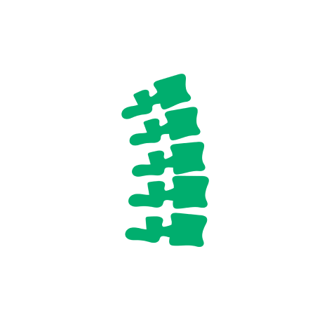
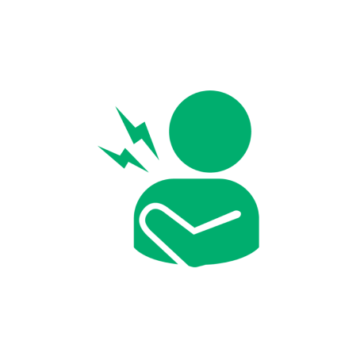
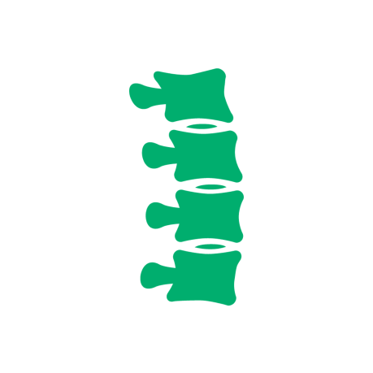
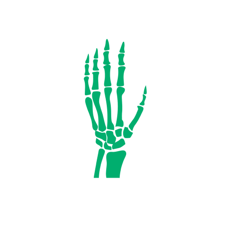
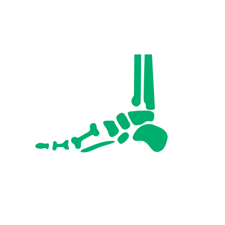
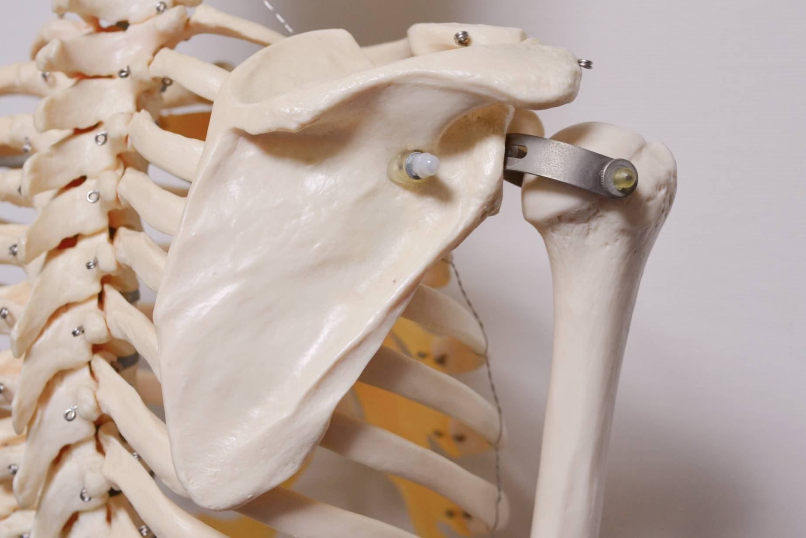
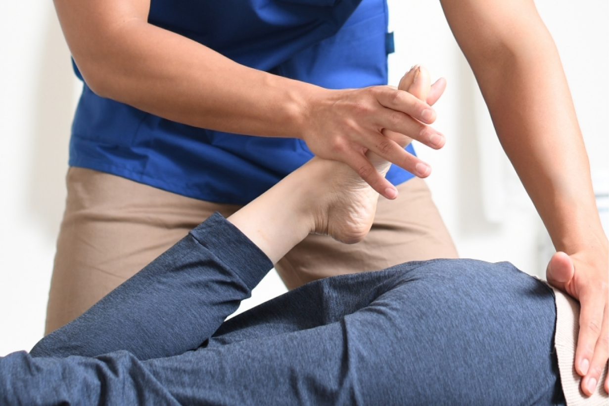

診療案内TREATMENT
整形外科ORTHOPEDICS
関節、骨や筋肉など 「運動器」 を
診る専門科です。
関節の痛み、骨粗鬆症、
リウマチの治療に加えて、
ケガや捻挫、骨折、
交通事故など外傷の診療を行います。
首の症状

痛み・だるさ・こり
頚椎椎間板ヘルニア・頚椎症性脊髄症など
肩の症状

痛み・だるさ・しびれ・こり
・腕が上がらない
五十肩（肩関節周囲炎）・肩腱板断裂など
腰の症状

痛み・だるさ・突っ張る
腰椎椎間板ヘルニア・側弯症・ぎっくり腰など
手・腕の症状

痛み・しびれ・動かしにくい
ばね指・ヘバーデン結節・橈骨神経麻痺など
股関節の症状

痛み・だるさ・しびれ・動かしにくい
変形性関節症・関節リウマチ・骨頭壊死など
膝の症状

痛み・しびれ・腫れている
変形性股関節症・半月(板)損傷
・スポーツ外傷など
足首の症状

痛み・しびれ・腫れている
足関節捻挫・アキレス腱断裂・脱臼骨折など
足の症状

痛み・しびれ・動かしにくい・腫れている
外反母趾・モートン病・足の慢性障害など
骨粗鬆症OSTEOPOROSIS

骨粗鬆症とは、骨代謝のバランスが崩れることにより骨がもろくなる病気です。
ただし症 状がないまま進行している事が多く、骨折をするまで気が付かないことがほとんどです。
骨折により生活が変わってしまう事も多く、その予防が非常に大切だと考えております。
当院では定期的な検査を通じて骨粗鬆症の早期発見を目指し、また採血、骨粗鬆症マーカーなどの検査により原因を調べ、患者様一人ひとりに合った治療を提供いたします。
リハビリテーションREHABILITATION
患者様の症状に合った最適なリハビリ治療
来院される患者様には、変形性関節症、肩関節疾患・脊椎疾患、外傷が多く、物理療法、運動指導などを中心にリハビリテーションを行っております。
特に腰痛や肩こり、膝の痛みなどは、薬や注射だけでは改善が難しくリハビリテーションが欠かせません。
当院では、必要に応じてお薬や注射で上手に痛みを抑えながら、また痛みがぶり返さず、今以上に悪くならないように、身体がもつ治癒能力を最大限に引き出す治療をしていき、 再び健やかな社会生活を送れるように全力でサポートします。

フレイル・ロコモ
フレイルおよびロコモ (ロコモティブシンドローム) とは、生活機能が低下し、介護が必要になる危険が高まる状態です。
原因として加齢による筋力低下や骨・関節など身体的な 問題に加えて、認知機能の低下など精神的な問題、社会的な問題があります。
特に足腰が衰えると「立つ」「座る」「歩く」の基本動作がむずかしく、日常生活に支障が出てしまいます。
たとえご高齢であっても習慣的に運動を行うことで運動機能は向上することがわかっており適切な病気の治療と運動習慣、生活習慣を整えることでこれらの予防や改善が可能です。
当院の強みである内科 整形外科を中心として、皆様が生き生きと生活できるように、「健康寿命」をのばせるように、総合的にサポートいたします。
https://locomo-joa.jp「ロコモティブシンドローム」
内科INTERNAL MEDICINE
咳、鼻水、のど痛などの風邪症状や腹痛、下痢、便秘などの腹部症状をはじめ高血圧、糖尿病、脂質異常症、気管支喘息などの生活習慣病まで幅広く診療しています。からだの調子が悪い時に、何でも相談出来る地域の「かかりつけ医」です。
入院が必要な場合は、速やかに適切な医療機関にご紹介致します。
日常生活の健康相談、介護保険のことなどもお気軽にご相談下さい。
生活習慣病
肥満、喫煙、運動不足、ストレスなど生活習慣の乱れが原因で発症する病気のことです。
高血圧、糖尿病、脂質異常症、高尿酸血症が含まれ、これらは動脈硬化につながります。血管内にコレステロールがくっついて血管が狭くなる血管が詰まる・血管が破れると、脳卒中、心臓病、腎硬化症、閉塞性動脈硬化症などの重大な病気となる恐れがあります。
生活習慣病は、生活習慣を見直すことで予防・改善が可能です。ただし症状が現れにくい ため、当院では健康診断など定期的な検査を行い早期発見に努めております。
今の生活習慣をより良い習慣に一歩ずつでも近付けるように、小さな工夫を長く続けていく事が大切です。